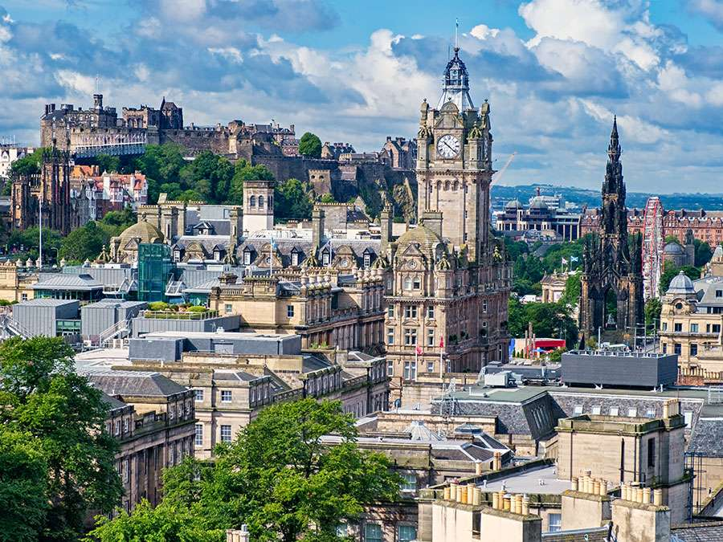
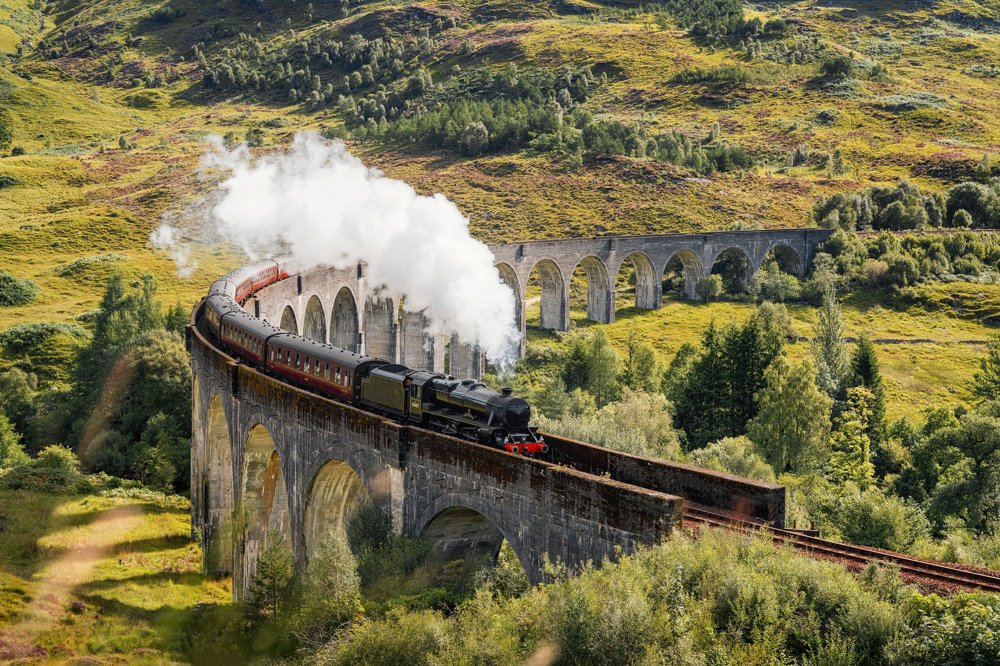
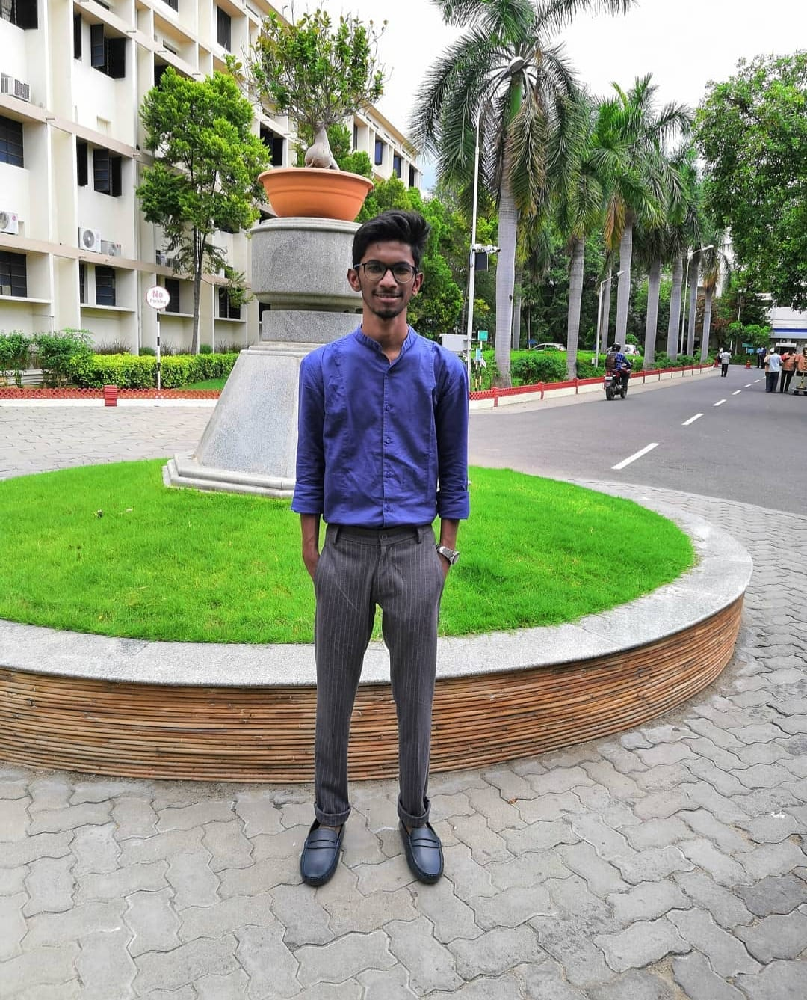
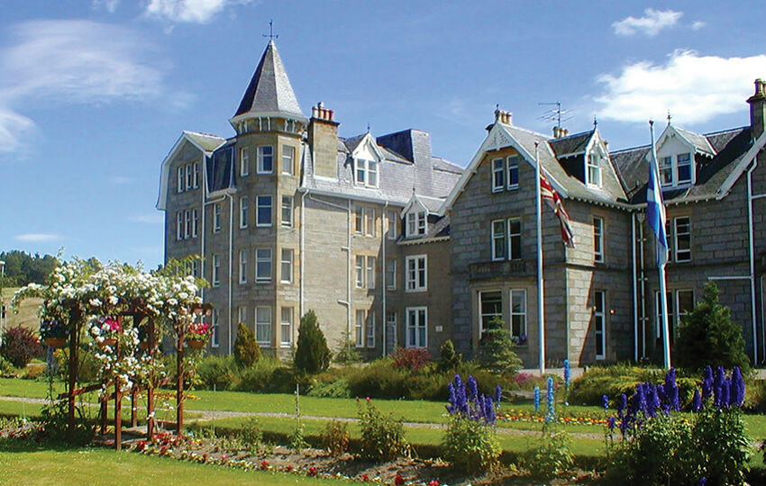
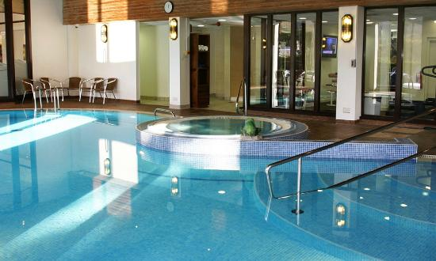

On trip to Scotland, the beauty of the country may not have been the main reason to go, but you can’t help but be enchanted by its dramatic landscapes. It can even be magical, like at the Fairy Pools on Skye. And then there’s the unicorn, Scotland’s national animal! Of course, there’s also a fascinating history to discover, with its castles as living proof (3,000 of them!). Oh, and then there’s the golf and the whiskey distilleries, too…


.
On trip to Scotland, the beauty of the country may not have been the main reason to go, but you can’t help but be enchanted by its dramatic landscapes. It can even be magical, like at the Fairy Pools on Skye. And then there’s the unicorn, Scotland’s national animal! Of course, there’s also a fascinating history to discover, with its castles as living proof (3,000 of them!). Oh, and then there’s the golf and the whiskey distilleries, too…
August has to be a prime month, especially in Edinburgh. There’s the fabulous Military Tattoo and the outstanding Fringe Festival, featuring up to 50,000 performances! Skara Brae, on the Bay of Skaill in Orkney, provides a glimpse of the most complete stone-built Neolithic village from 3180 BC and 2500 BC. Scotland’s stately castles include Edinburgh Castle.
Local bus services, express coaches, national rail services, ferries, Glasgow subway and Edinburgh tram routes together make up Scotland's public transport network. You can find information about all of these modes of transport on Traveline Scotland.
Scotland's climate is generally cool and very wet. The average annual high temperature is around 11 degrees Celsius (51° Fahrenheit). ... The wettest parts of Scotland experience an average of 250 days of rain per year, whereas the driest parts only experience an average of about 150 days of rain per year.
Scottish cuisine encompasses the cooking styles, traditions and recipes associated with Scotland. It has distinctive attributes and recipes of its own, but also shares much with British and wider European cuisine as a result of local, regional, and continental influences—both ancient and modern.
France Travel Experts
One of our more popular destinations, let our travel experts plan and arrange your trip to France the right way, and enrich your France vacation with the added value we can provide.
Abhishek Asgola

Ritik Kumar
Sahil Kaling
Aditya Bonnerjee


.
Resorts & Hotels in Scotland
August has to be a prime month, especially in Edinburgh. There’s the fabulous Military Tattoo and the outstanding Fringe Festival, featuring up to 50,000 performances! Skara Brae, on the Bay of Skaill in Orkney, provides a glimpse of the most complete stone-built Neolithic village from 3180 BC and 2500 BC. Scotland’s stately castles include Edinburgh Castle, Eilean Donan Castle perched atop of an island, Kelburn Castle, and the chateau-style Dunrobin Castle, which is Britain’s oldest inhabited house.
.
EDINBURGH
The Balmoral
Ranked as the Top Hotel in The U.K
PERTHSHIRE
The Gleneagles Hotel
A luxury gathering place and golfer's paradise for nearly a century.
ST ANDREWS
Fairmont St Andrews
Stunning cliff top views, coastal walks, history and Scottish touches everywhere.